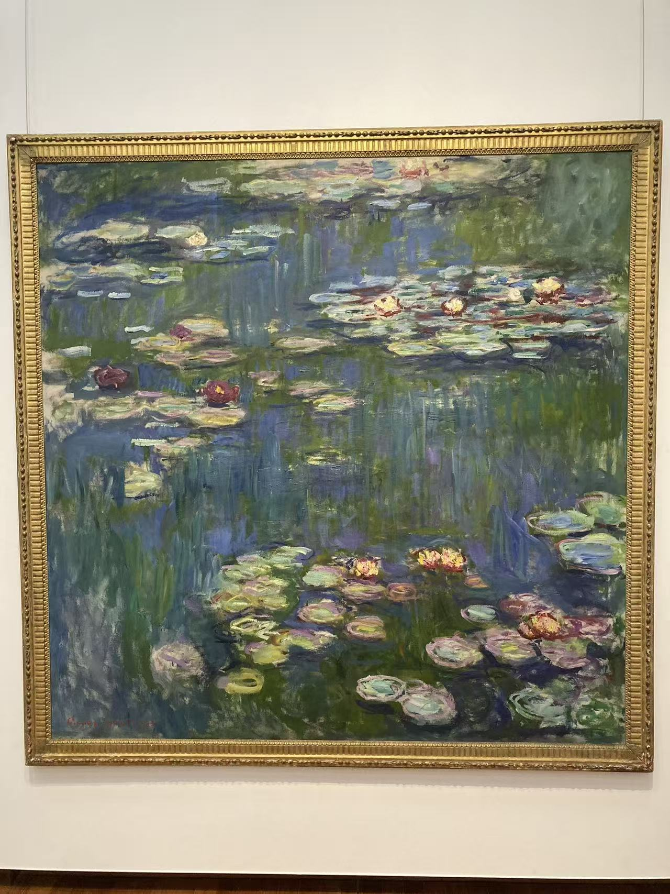
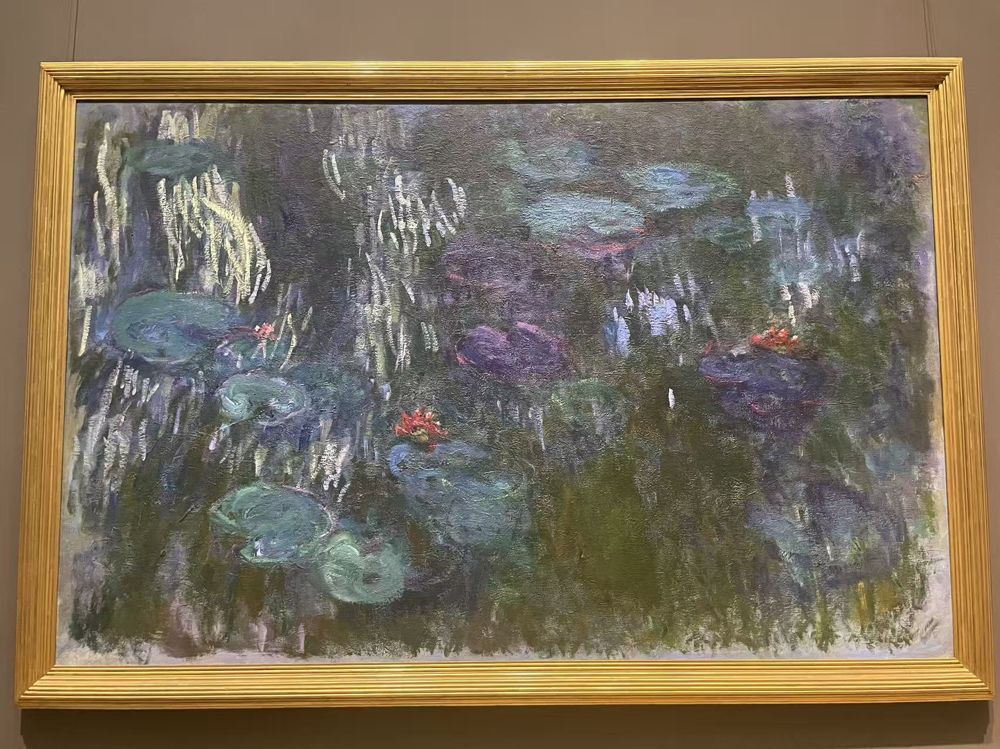
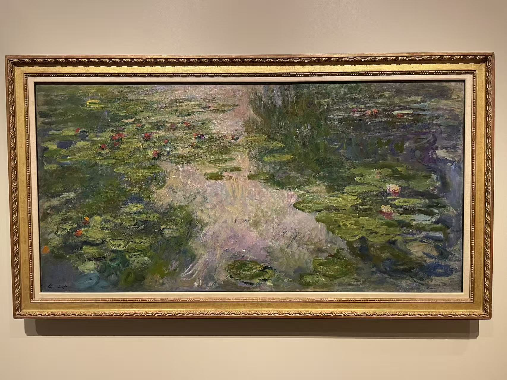
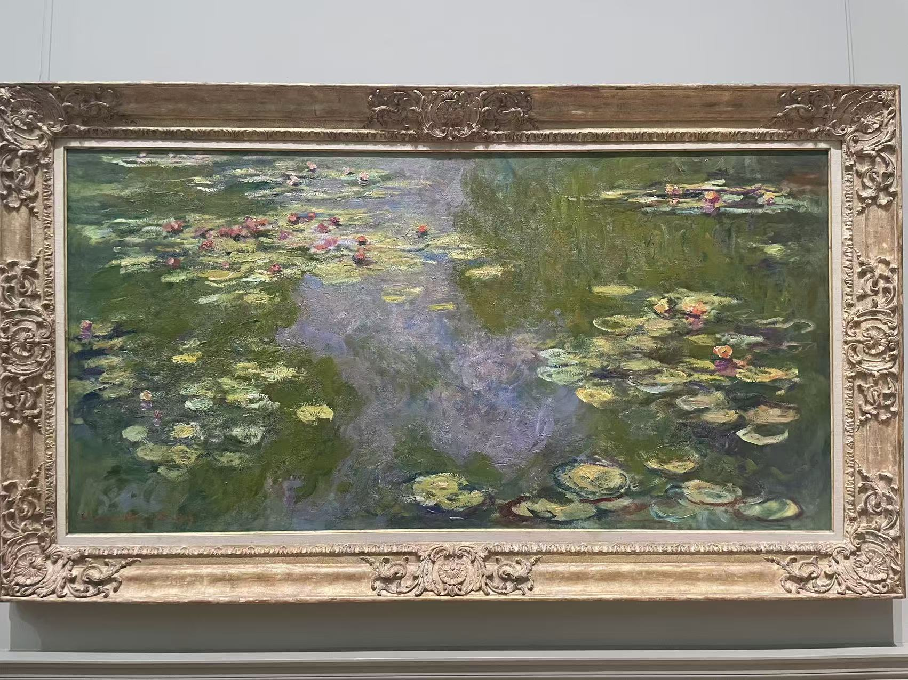
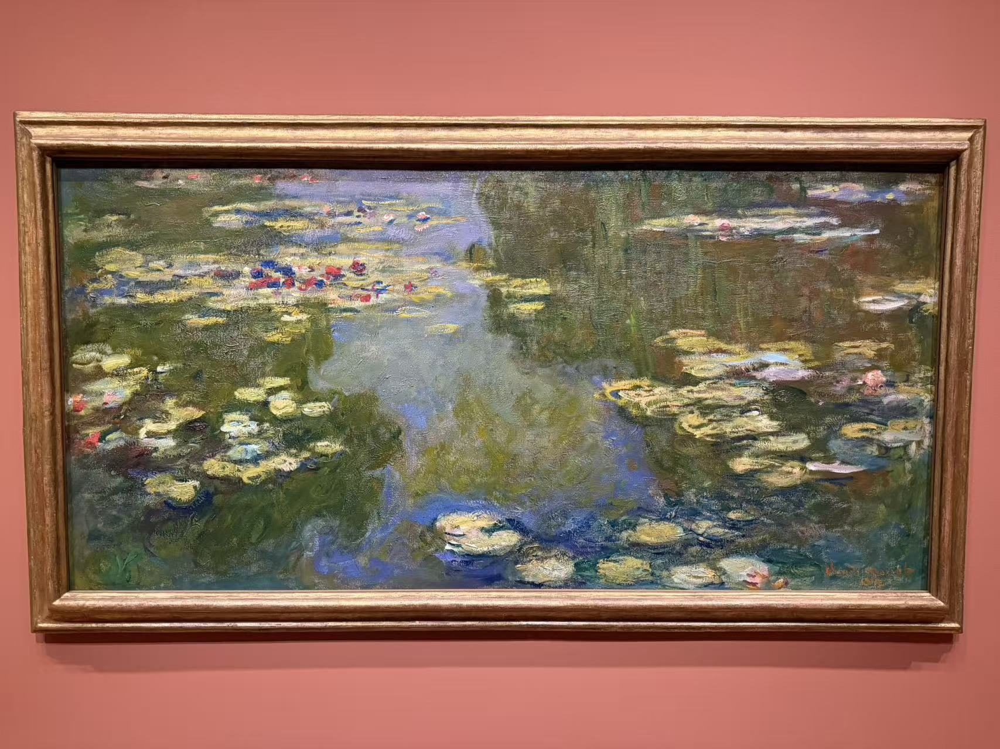

EUROPEAN PAINTING / 004
莫奈的睡莲
CLAUDE MONET 1840—1926
同一座池塘，
在不同的地方重逢。
从日本桥走到水面，再走进橘园。把看过的睡莲放在一起，慢慢分辨花、倒影和笔触。
16 幅睡莲与池塘绘画
1 组橘园记录
25 张参观照片 · 含展厅与局部细节
 睡莲（百子莲三联画右幅）
睡莲（百子莲三联画右幅）
纳尔逊－阿特金斯艺术博物馆没有找到符合条件的作品，可以换个词或清除筛选。
1899—1900
池塘与日本桥
桥还在，池岸也还在。先看能够辨认方向的花园。

1899年
大都会艺术博物馆 · 纽约
竖幅把桥下的水面拉长，弧形桥身靠近上方，睡莲与倒影占据了更多空间。

1899年
美国国家美术馆 · 华盛顿
桥拱靠近画面上缘，下方留出一大片密集的睡莲，绿色几乎封住了花园的天空。

1899年
普林斯顿大学艺术博物馆
桥栏泛着浅蓝，水面在花叶之间露出亮色，岸边繁密的植物围成一个安静的空间。

1900年
奥赛博物馆 · 巴黎
桥横过繁密的花园，粉色与紫色散在绿叶之间。先看桥的弧线，再看桥下水面上平行展开的花叶。
1903—1908
水面与倒影
岸边退出画面，天空开始出现在脚下。

1903年
达拉斯艺术博物馆
云影在画面中间留下明亮的空处，睡莲像是漂在天空上，水面与倒影一时难分。

1907年
休斯顿美术馆
中间一道浅紫色的天光向下展开，两侧是深色树影，前景的睡莲把视线重新拉回水面。

1908年
达拉斯艺术博物馆
圆形边界截住花叶和倒影，画面没有一个明确的入口，目光容易在水面上来回游移。
1914—1919
晚年的睡莲
仍是那座池塘，花、叶与倒影却有了更自由的笔触。

1914—1915年
波特兰艺术博物馆
蓝色水面里穿插深绿的竖向倒影，浅色睡莲团块像停在这些笔触上。

1916年
国立西洋美术馆 · 东京
近乎正方形的画面里，浅色花朵与叶片一团团散开，长长的暗绿倒影向水下延伸。

1916—1919年
大都会艺术博物馆 · 纽约
深紫和暗绿的水面里，几道浅色竖笔像倒影，也像直接留在画布上的痕迹。

1917—1919年
檀香山艺术博物馆
几团睡莲从左下斜着伸向远处，蓝色水光夹在绿叶之间，笔触的方向比轮廓更醒目。

1919年
大都会艺术博物馆 · 纽约
浅色花叶聚在两侧，中央露出蓝紫色的水光。横幅让视线沿着池面慢慢展开。

1919年（据现场展签）
私人收藏 · 西雅图借展
花叶分布在两侧，中间留出紫蓝色的水光；横幅像是从池塘截取的一段。
约1915—1926
展开的大画幅
纳尔逊、克利夫兰与卡内基。照片先记下全貌，再走近看。
约1915—1926年
纳尔逊－阿特金斯艺术博物馆
蓝紫色在上方铺开，下方转成黄绿。几团睡莲把宽阔的水面分成疏密不同的区域。

约1915—1926年
克利夫兰艺术博物馆
大片蓝紫水面向两侧展开，右下方的浅色花朵十分醒目，左下则像潜着一层草木。

约1915—1926年
卡内基艺术博物馆 · 匹兹堡
远看是一整条池水；走近以后，花、叶与倒影分解成有厚薄和方向的色块。
1915—1926 / 1927年陈列开放
走进橘园
七张展厅照片合为一组，保留长幅绘画与弧形墙面的关系。

1915—1926年；1927年陈列开放组画／展厅记录
橘园美术馆 · 巴黎
长幅睡莲沿弧形墙面展开，照片里的天窗、座椅与观看距离，也是这组记录的一部分。